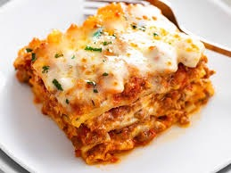

Lasagna

Description
We can also go to lower subsection. Making lasagna can be time-consuming, but the results are well worth the wait. You'll find a detailed ingredient list and step-by-step instructions in the recipe below, but let's go over the basics:
this is bold; but not strong.
This is a small paragraph inside a div.
This is another paragraph that I want to test out.
Ingredients
I am planning to add more items here.
Lasagna is a good food.
Look, this is a paragraph not put in a proper paragraph marker tags. I just want to see how this wouve idld relative to other items. There is a clear difference between this one and the regular paragraphs. This one has bigger margines.
The Allrecipes community adores this lasagna recipe because it's incredibly customizable, so you can easily alter the ingredient list to suit your needs. If you want to stay true to the original recipe, though, these are the ingredients you'll need to add to your grocery list:
- Meat: This super meaty lasagna has sweet Italian sausage and lean ground beef.
- Onion and garlic: An onion and two cloves of garlic are cooked with the meat to add tons of flavor.
- Tomato products: You'll need a can of crushed tomatoes, two cans of tomato sauce, and two cans of tomato paste.
- Sugar: Two tablespoons of white sugar add subtle sweetness and enhance the flavor of the sauce.
- Spices and seasonings: This lasagna recipe is flavored with fresh parsley, dried basil leaves, salt, Italian seasoning, fennel seeds, and black pepper.
- Lasagna noodles: Use store-bought or homemade lasagna noodles.
- Cheeses: Parmesan, mozzarella, and ricotta cheese make this lasagna extra decadent.
- Egg: An egg helps bind the ricotta so it doesn't ooze out of the lasagna when you cut into it.
Steps for cooking
- First cook the pasta for 5 minutes
- Then, put the tomato sause on top of the pasta
- Then, put the cheese on top